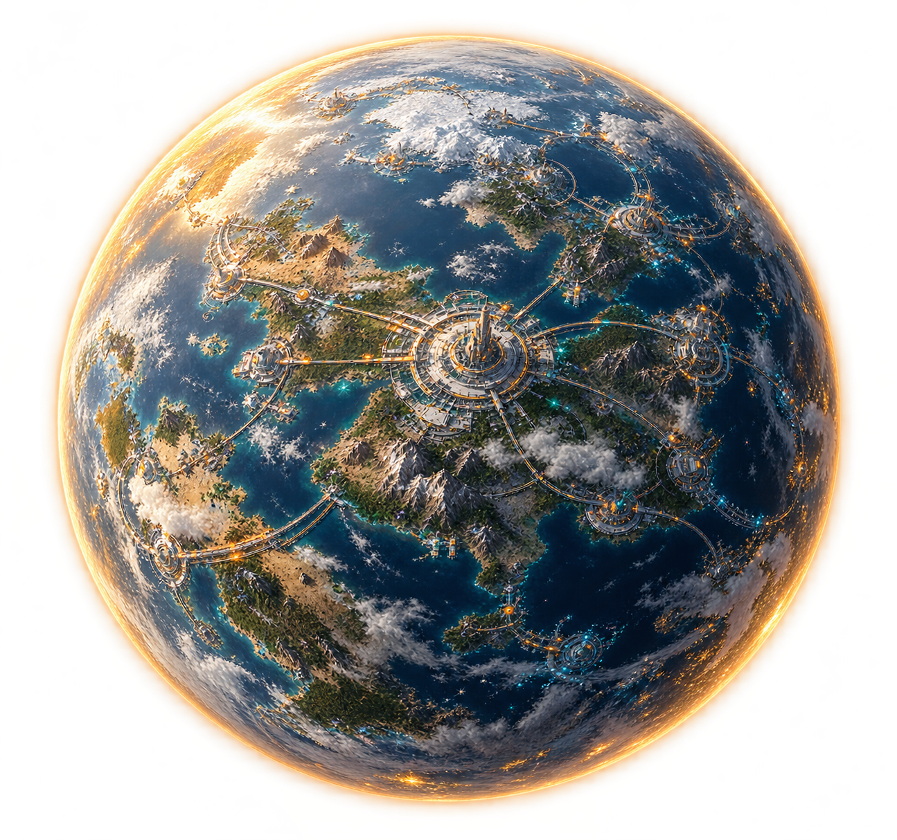
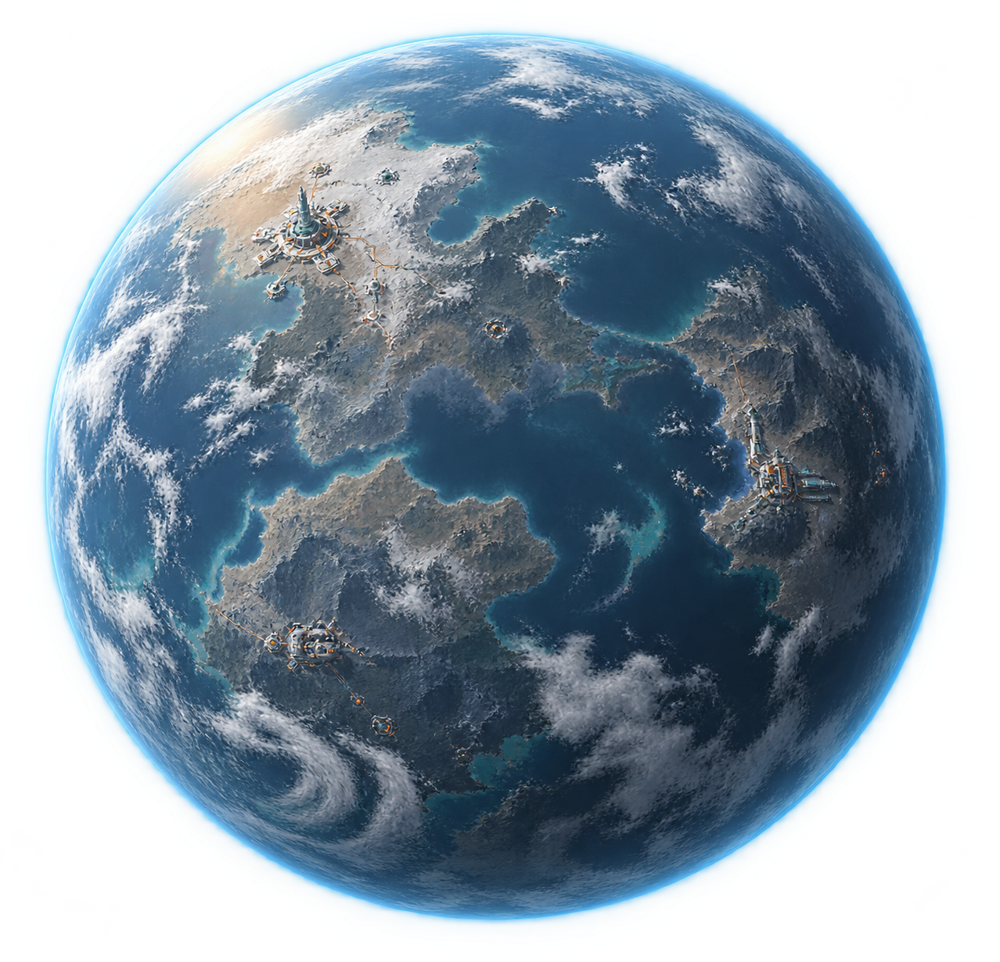
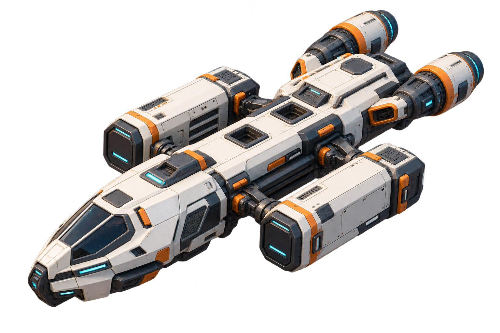
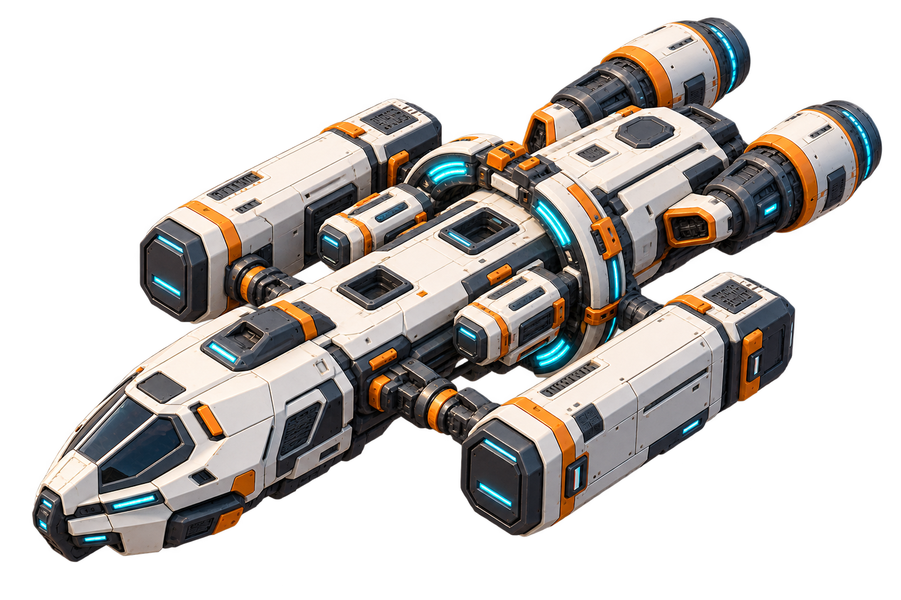
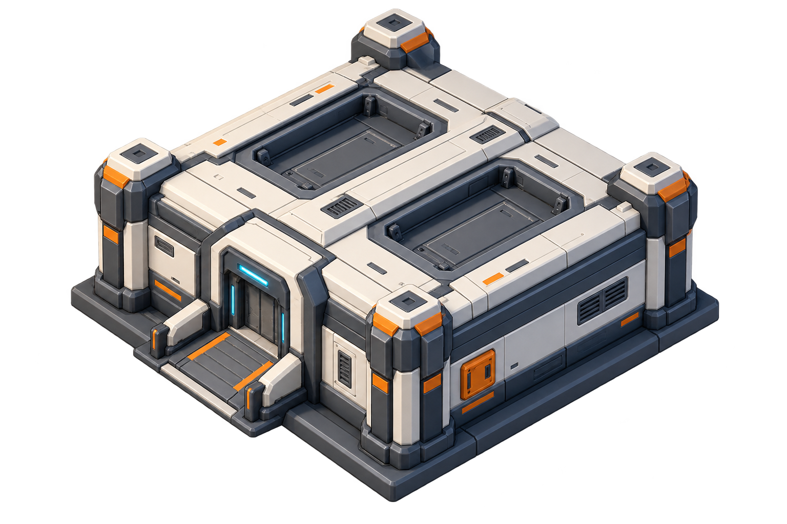
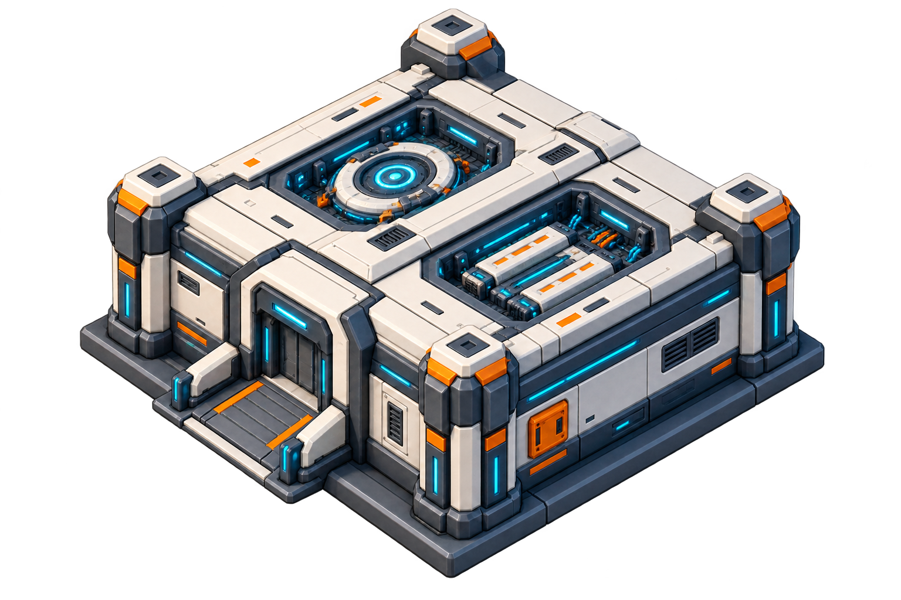
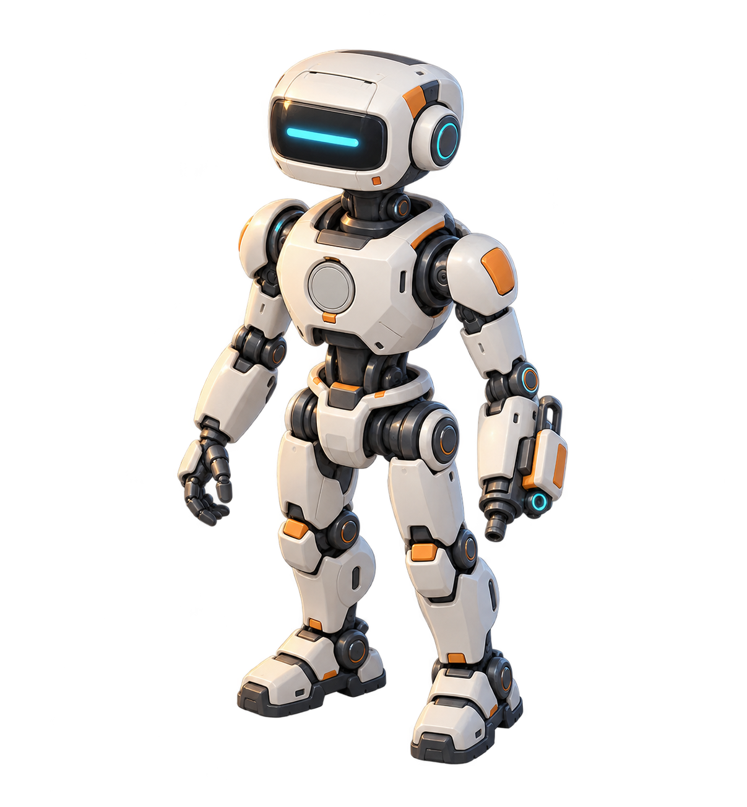
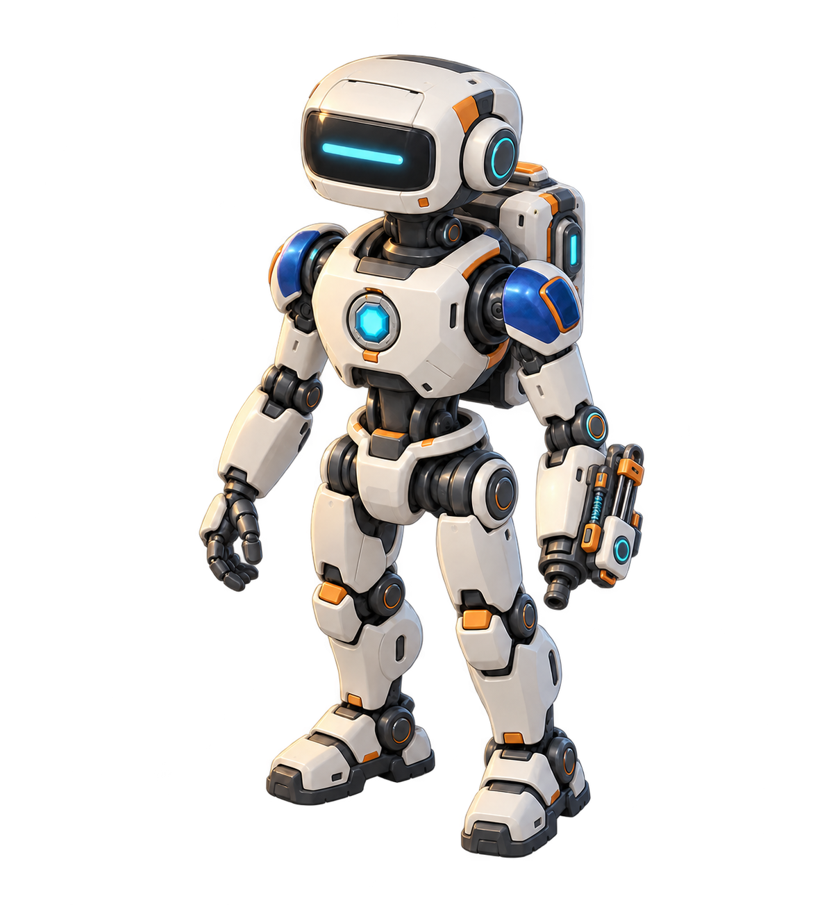

DREAMMATE / UNIVERSE STUDY 01
能力宇宙 · 首轮素材风格
设备是星球，星舰表现能力活动；进入星球看平面基地，再进入建筑看参与者。
灰白外壳
石墨骨架
橙色功能标记
青蓝能源光
宇宙层 · 设备星球
当前以 Mac 为指定视觉主星；大小表现承载与核心程度。轨道组织空间，舰群密度表达抽样后的能力规模。

DEVICE / HUB WORLD
核心设备星球
主星概念 · 建设密度 · 温暖光晕

DEVICE / PERIPHERAL WORLD
外围设备星球
外围成员概念 · 开阔表面 · 青蓝边缘光
宇宙层 · 能力活动星舰
星舰或远景小点表现智能体、服务与项目的规模示意；展示数量经过抽样，巡航不表示真实调用正在发生。

SHIP / BASE
基础星舰
紧凑骨架 · 基础服务舱 · 模块插槽

SHIP / ADVANCED
进阶星舰
能源环 · 辅助功能舱 · 完整配套
基地层 · 项目工坊
相同占地与建筑外廓，用嵌入设备、表面细节和能源接口表现升级。

WORKSHOP / BASE
初建工坊
简洁模块舱 · 空置设备位 · 基础入口

WORKSHOP / ADVANCED
进阶工坊
嵌入式核心 · 模块阵列 · 精密面板
建筑内部 · 智能体角色
共用身体骨架，身份徽章、肩部、背包和工具可以替换。

AGENT / GENERAL
通用智能体
共享骨架 · 空白身份槽 · 通用工具接口

AGENT / RESIDENT
常驻智能体
稳定身份徽章 · 专属工具 · 功能背包